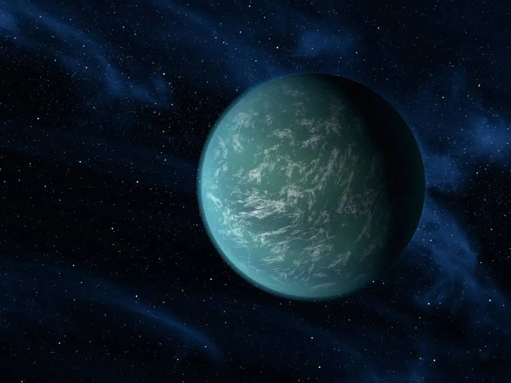
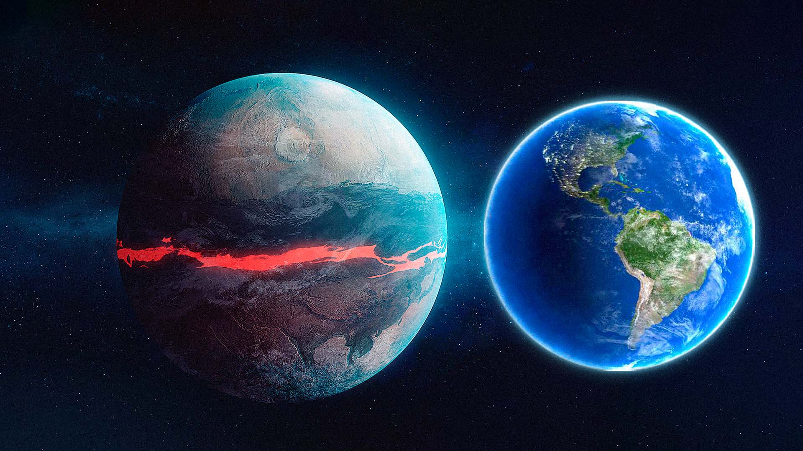

EXO. PLANETS
| EXO Planets images | Details about Planets |
|---|---|
 |
Gliese 667Cc is a super-Earth exoplanet located just 22 light-years from Earth. It is at least 4.5 times more massive than Earth, and it orbits a red dwarf star. Gliese 667Cc is located in the habitable zone of its star, meaning that liquid water could potentially exist on its surface. |
 |
Kepler-186f is a rocky exoplanet located in the habitable zone of its star. It is about 1.1 times more massive than Earth, and it orbits a star similar to the sun. Kepler-186f is located about 500 light-years from Earth. |
|  | Kepler-22b is another super-Earth exoplanet located in the habitable zone of its star. It is about 2.4 times more massive than Earth, and it orbits a sun-like star. Kepler-22b is located about 600 light-years from Earth. |
 |
Kepler-62f is a rocky exoplanet located in the habitable zone of its star. It is about 1.4 times more massive than Earth, and it orbits a red dwarf star. Kepler-62f is located about 1,200 light-years from Earth. |
|  | Kepler-69c is a rocky exoplanet located in the habitable zone of its star. It is about 1.7 times
more massive than Earth, and it orbits a star slightly cooler than the sun. Kepler-69c is
located about 2,700 light-years from Earth.
A comparsion of exo planet Kepler-69c and our planet Earth can be seen in the image. |